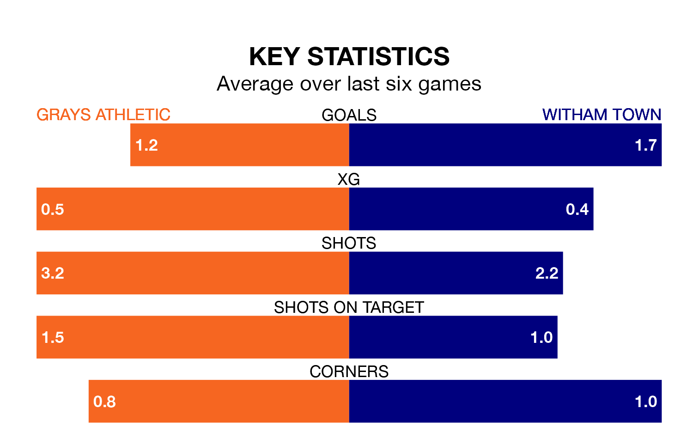

Grays Athletic are on a poor run ahead of hosting Witham Town at the Mill Field on Tuesday, with just three points collected from their last six games.
Grays have picked up just one win in their last six Isthmian League Division One – North games, and face a Witham side whose last six games have brought two wins and one draw.
Grays are 18th in the table after 20 games, of which they have won three and drawn five, earning 14 points.
Witham are six places ahead of Athletic in 12th, with six wins and six draws putting them on 24 points.
In the last 10 years, Grays and Witham have played each other on seven occasions. Grays won three of them, Witham two, and they drew twice.
On average, Grays scored 2.4 goals and Witham 1.1 in those matches.
Their last meeting was on December 26 2022, when Grays won 7-1 at home.
With 24 goals in 20 games so far this season, the home side are scoring at below the league average rate with 1.2 goals per game. And they are conceding more than average, letting in 39 goals at a rate of 2.0 per game.
Town are also below average scorers, with 1.4 goals per game, compared to a league average of 1.7. They have conceded 1.7 goals per game.
Grays's last match was on Saturday, a 2-0 loss against Lowestoft Town.
Witham beat Heybridge Swifts 3-0 last time out, on Friday.
Updated: 13:20 (UTC), 29/01/24